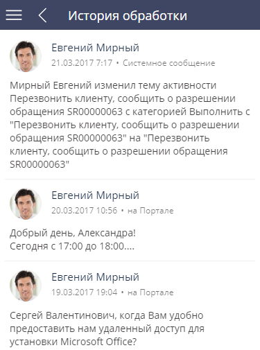

Раздел Обращения (Рис. 1) предназначен для управления инцидентами и запросами на обслуживание, поступающими в службу поддержки.
Войти в раздел Обращения вы можете по кнопке  в главном меню мобильного приложения.
в главном меню мобильного приложения.
Раздел доступен в мобильном приложении, синхронизированном с основным приложением Creatio, которое содержит раздел Обращения. Раздел доступен по умолчанию и нет необходимости подключать его с помощью мастера мобильного приложения. С помощью раздела Обращения вы можете:
-
Регистрировать обращения (например, внутренние запросы на обслуживание).
-
Просматривать состояние обращений.
-
Добавлять информацию о разрешении обращения.
-
Публиковать сообщения на портале самообслуживания.
-
Выполнять эскалацию обращений (только для приложений синхронизированных с продуктом Service Creatio, enterprise edition).
По умолчанию для каждой записи в реестре раздела Обращения отображаются следующие поля: Тема, Дата регистрации, Номер, Состояние и Описание. Иконка в правой части записи отображает приоритет обращения:
-
Низкий.
-
Средний.
-
Высокий.
-
Критический.
Меню действий записи раздела отображается по нажатию кнопки  . В разделе Обращения с помощью меню действий можно войти в ленту обращения.
. В разделе Обращения с помощью меню действий можно войти в ленту обращения.
На странице раздела Обращения имеется стандартное поле поиска по разделу и доступ к фильтру в разделе.
Создать новое обращение
Чтобы зарегистрировать новое обращение:
-
Нажмите
 , чтобы войти в раздел Обращения.
, чтобы войти в раздел Обращения. -
Нажмите кнопку . Откроется страница обращения.
-
Заполните необходимые поля:
-
Укажите тему обращения.
-
В поле Контакт или Контрагент укажите клиента, который обратился в службу поддержки. Одно из этих полей обязательно для заполнения. Если заполнено поле Контрагент, то список контактов, доступных в справочнике, будет ограничен контактами указанного контрагента. Если заполнено поле Контакт, то данное поле автоматически заполняется значением поля Контрагент, указанным для выбранного контакта.
-
-
Заполните профиль обращения:
-
Выберите категорию обращения (запрос на обслуживание или инцидент).
-
Укажите ответственного либо группу ответственных по обращению.
-
- Сохраните обращение.
В результате будет создано новое обращение. Система автоматически формирует его номер в соответствии с заданным шаблоном при помощи системной настройки “Маска номера обращения” (код “CaseCodeMask”).
Вы можете добавить файлы и ссылки, которые характеризуют обращение, на деталь Файлы и ссылки (Рис. 2). Для добавления вложения нажмите и выберите файл.
Также добавить вложение можно с помощью действия Добавить файл или ссылку () в меню действий страницы обращения. Максимально возможный размер загружаемого файла по умолчанию — 10 МБ.
Обработать обращение
Используя функционал мобильного приложения, вы можете публиковать сообщения в ленте (для внутренних коммуникаций) или оставить сообщение для клиента на портале самообслуживания. Если ваше мобильное приложение синхронизировано с продуктом Service Creatio, enterprise edition, то вы также можете эскалировать обращения.
Оправить сообщение в ленту
Опубликовать сообщение в ленте можно двумя способами:
-
Из главного меню: нажмите кнопку
 , чтобы войти в раздел, выберите нужное обращение и нажмите кнопку , затем выберите команду Перейти в ленту (Рис. 3).
, чтобы войти в раздел, выберите нужное обращение и нажмите кнопку , затем выберите команду Перейти в ленту (Рис. 3). -
Из открытого обращения: нажмите
 , затем выберите команду Перейти в ленту.
, затем выберите команду Перейти в ленту.На открывшейся странице нажмите кнопку
 . Введите сообщение и нажмите кнопку Опубликовать.
. Введите сообщение и нажмите кнопку Опубликовать.
Ответить на обращение клиента
Чтобы опубликовать сообщение на портале самообслуживания:
-
Для доступа к обращению из главного меню: нажмите кнопку , затем нажмите на нужную запись в реестре и откройте страницу обращения.
-
Для доступа к порталу со страницы обращения: нажмите кнопку , затем нажмите на действие Опубликовать сообщение на портале.
На открывшейся странице портала введите сообщение и нажмите кнопку Опубликовать.
Эскалировать обращение
Чтобы эскалировать обращение на другой уровень поддержки:
-
Для доступа к обращению из главного меню: нажмите кнопку , затем нажмите на нужную запись в реестре и войдите на страницу обращения.
-
Чтобы эскалировать обращение: нажмите кнопку
 , затем нажмите на действие Эскалировать (Рис. 4). На открывшейся странице эскалации укажите линию поддержки и нового ответственного или группу ответственных (необходимо заполнить хотя бы одно поле).
, затем нажмите на действие Эскалировать (Рис. 4). На открывшейся странице эскалации укажите линию поддержки и нового ответственного или группу ответственных (необходимо заполнить хотя бы одно поле).
Просмотреть историю обработки обращения
Деталь История обработки отображает историю коммуникаций с клиентом, а также историю по консультации, инциденту или запросу на обслуживание. История обработки включает:
-
Email-сообщения по данному обращению.
-
Внутренние сообщения ленты, размещенные сотрудниками.
-
Сообщения на портале, оставленные сотрудниками для пользователей.
На деталь также автоматически добавляются системные сообщения о событиях, связанных с текущим обращением.
Рис. 5 — История обработки